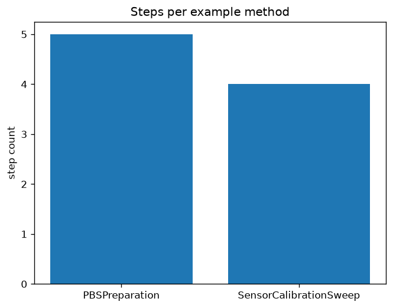

1 Abstract
This paper describes a small, tested domain language for
specifying controlled methods — the methods-paper
exemplar of the Research Project
Template. Unlike a results paper, this manuscript’s subject is the
methodology itself: a controlled vocabulary, a unit system with
dimensional safety, four staged validation gates, and a deterministic
compiler, implemented in
projects/templates/template_methods_paper/src/methods_dsl/
and described section by section in sec. 3. The domain language’s vocabulary is
informed by BPL (Biology Programming Language, (Bota
Biosciences 2026)), an upstream reference that encodes
laboratory protocols as programs with biology-native types, staged
validation, and deterministic compilation; this exemplar generalizes
BPL’s intent vocabulary and pipeline shape from wet-lab protocols to any
controlled procedure.
A Method is a name, a set of typed parameters and
resources, and an ordered, dependent set of steps — constructed directly
as frozen Python dataclasses (src/methods_dsl/model.py)
rather than parsed from new text syntax. Every Quantity
carries a unit that resolves to one of 18 controlled units across seven
dimensions, and every step names one of 9 controlled-vocabulary intents
(src/methods_dsl/vocabulary.py), executable on one of 3
backends. 4 staged gates — structural, semantic, plan, and target —
validate a method before compile_method
(src/methods_dsl/compiler.py) deterministically schedules
it with Kahn’s algorithm (Kahn 1962) and hashes the canonical plan
with SHA-256.
We demonstrate the language on 2 worked example methods spanning both
domains BPL’s design targets and the domains it generalizes to: a manual
wet-lab preparation (PBSPreparation, 5 steps, target
human, plan hash 313b9b17de98) and an
automated instrument-calibration procedure
(SensorCalibrationSweep, 4 steps, target
automated, plan hash d89cced19be6). Live
re-compilation determinism check: Yes. Across both
methods, 8 of 8 staged-gate evaluations pass. A demonstration provenance
hash-chain (src/methods_dsl/trust.py) of length 3 verifies
as Yes.
Contributions are methodological and
architectural. On the methods side, we show that a
controlled vocabulary expressed as typed dataclasses — not a parsed
grammar — is sufficient to reproduce BPL’s core safety properties
(dimensional safety, staged validation, deterministic compilation) at a
scope appropriate for a template exemplar. On the architecture side, the
DSL is exercised by a zero-mock test suite under the repository’s
configured project coverage gate, generates 14 artifacts (1 figures, 7
data files, 6 reports) per pipeline run, and injects reproducibility
metadata (configuration hash a0f000565bef6a79, build
timestamp 2026-07-12T22:24:06Z) into sec. 7.
Keywords: methods paper, domain-specific language, controlled methods, deterministic compilation, staged validation, dimensional analysis
2 Introduction
This template_methods_paper serves as the
methods-paper exemplar for the Research Project
Template ecosystem: a manuscript whose subject is a methodology —
here, a domain language for specifying controlled methods — rather than
results produced by running one. The prose, the labelled figures, and
the compiled-plan table are produced through the same auditable custody
chain every exemplar in this template uses: tested functions in
src/, a thin analysis script, and
generated-variable-injected, multi-format rendering.
2.1 Why a methods paper needs its own DSL
A methods section in ordinary prose is ambiguous by construction: “add 10 mL of water, then mix” admits multiple readings of order, units, and what “mix” means operationally. BPL (Bota Biosciences 2026) makes the case for laboratory protocols directly: free-text instructions admit multiple interpretations, unit errors and reagent mismatches surface only at the bench, and re-executing a protocol on a different operator or instrument introduces silent variation. Fowler frames the general remedy as a domain-specific language (Fowler 2010): a small, purpose-built notation whose vocabulary is restricted exactly to the concepts the domain needs, so that what can be written down is exactly what is intended.
2.2 What this exemplar borrows from BPL, and what it generalizes
BPL’s architecture is a compiler pipeline — parse, semantic check,
lower, schedule, execute, export — over a biology-native type system
(units, dimensional analysis, MW-aware concentration), staged validation
gates, and deterministic compilation with a stable plan hash. Three
design choices carry over directly into
src/methods_dsl/:
- Intent over instruction. BPL users write high-level
intents (
transfer,add_reagent,incubate); a compiler lowers them to backend-specific primitives.src/methods_dsl/vocabulary.py’sStepKindenum is the same idea, generalized:TRANSFER/ADD/MIXname what happens, never how a particular backend performs it. - Dimensional safety. BPL’s type system catches
mL + gat compile time, not at the bench.src/methods_dsl/units.pyimplements the same guarantee with a smallDimension/Quantitysystem rather than a full unit library. - Deterministic compilation. Same source, same
options, same plan hash.
src/methods_dsl/compiler.py::compile_methodreproduces this with a canonical-JSON SHA-256 hash over a Kahn’s-algorithm (Kahn 1962) schedule.
What this exemplar does not carry over is BPL’s text
grammar and parser: a Method here is constructed directly
as frozen Python dataclasses (src/methods_dsl/model.py),
not parsed from .bpl source. This keeps the DSL’s
discipline in its typed, validated shape rather than in new concrete
syntax — appropriate for a template exemplar’s scope — while the
controlled vocabulary, dimensional safety, and deterministic compilation
generalize unchanged from wet-lab protocols to any controlled procedure,
demonstrated in sec. 4 by one
wet-lab-flavored method and one instrument-calibration method.
2.3 Template architecture context
The project sits on the repository’s three pillars:
src/methods_dsl/library: pure, side-effect-free dataclasses and functions — no plotting, no file I/O, and (with one declared logging exception) noinfrastructureimports. This purity is what makes the library forkable and trivially testable.tests/framework: a zero-mock suite that exercises every gate, the compiler, and the exporters against realMethodfixtures covering both the success path and every gate-failure mode.docs/knowledge base: the correspondence with BPL’s pipeline, the testing philosophy, and the operational rules that govern agents editing this tree.
2.4 The worked examples
We specify two methods with all_example_methods()
(src/methods_dsl/examples_methods.py):
PBSPreparation, an original — not copied from BPL’s shipped
examples — manual bench preparation in BPL’s own domain, and
SensorCalibrationSweep, a non-biology controlled procedure
mixing automated measurement with a human sign-off step. The second
example exists specifically to demonstrate that the DSL’s vocabulary
generalizes beyond wet-lab protocols, as sec. 2 claims.
2.5 Reader’s guide to the manuscript
- sec. 3 ties each
pipeline stage to its module in
src/methods_dsl/. - sec. 4 is artifact-centric: every reported number names the function or report file that produced it.
- sec. 6 lists the controlled vocabulary and software environment.
- sec. 7 records the artifact inventory and the exact commands to regenerate everything.
- sec. 8 states scope and related work so the exemplar is not mistaken for a general-purpose protocol-execution system.
3 Methodology
The DSL is implemented as eight cooperating modules under
src/methods_dsl/, each corresponding to one stage of a
BPL-inspired pipeline (Bota Biosciences
2026). This section walks the pipeline stage by stage, naming
the function or class that implements each design decision so every
claim below is directly checkable against
src/methods_dsl/.
3.1 Controlled vocabulary
(vocabulary.py)
A StepKind is one of 9 controlled intents —
TRANSFER, ADD, MIX,
INCUBATE, MEASURE, WAIT,
COMPUTE, VALIDATE, ANNOTATE — and
a Target is one of 3 execution backends —
HUMAN, AUTOMATED, SIMULATION.
target_accepts encodes which kinds require an automated
backend: only COMPUTE has no manual equivalent in this
DSL’s scope, so HUMAN and SIMULATION accept
every other kind. This is the domain-neutral generalization of BPL’s
protocol-level verbs (add_reagent, transfer,
incubate): a step names what happens, never
how a particular backend performs it.
3.2 Dimensional safety
(units.py)
Every Quantity(value, unit) resolves its
unit to one of seven Dimension members (mass,
volume, temperature, time, concentration, count, dimensionless) via
dimension_of, drawing from a controlled table of 18 unit
strings. check_compatible raises
DimensionError the moment two quantities with different
dimensions are combined — the concrete realization of BPL’s design
principle that “the type system catches mL + g at compile
time, not at the bench.” Temperature is tracked as its own dimension
with no shared base unit (degC and K are never
auto-converted), since this DSL has no use for that conversion and an
incorrect affine conversion is worse than refusing one.
3.3 Method model
(model.py)
A Method is a name, a version, a target, a tuple of
Resource declarations (anything a step reads from or writes
to — generalizing BPL’s reagent/labware), a
tuple of method-level Parameters, and a tuple of
Steps. Each Step carries a
step_id, a StepKind, a Target,
its own parameters, an optional expected duration (must be a time
Quantity), and a depends_on tuple of
prerequisite step_ids — the explicit DAG edges this
section’s compilation stage resolves. All four dataclasses are frozen;
__post_init__ rejects malformed shapes immediately (empty
names, self-dependency, a non-time expected_duration) so
structurally invalid methods cannot even be constructed, collapsing
BPL’s syntax gate into Python’s own construction-time checks.
3.4 Staged validation
(validation.py)
run_all_gates runs exactly 4 gates in fixed order,
mirroring BPL’s staged short-circuit (a syntax failure never reaches the
plan gate):
structural_gate— everystep_idis unique and everydepends_onentry resolves to a real step.semantic_gate— everyQuantityattached to a resource, a method parameter, a step’s expected duration, or a step parameter resolves to a knownDimension(catches the unit-vocabulary violation a frozen dataclass’s__post_init__cannot, sinceQuantitydoes not validate its unit eagerly).plan_gate— the step-dependency graph is acyclic, checked by attemptingtopological_orderand catchingCycleError.target_gate— every step’s target is compatible with the method’s target (HUMANmethods accept onlyHUMANsteps;AUTOMATEDmethods accept both;SIMULATIONmethods accept onlySIMULATIONsteps) and every step’s kind is executable on its assigned target.
If either of the first two gates fails, run_all_gates
returns early with only those two results — plan_gate and
target_gate assume a structurally and semantically valid
method and would otherwise report misleading secondary failures.
3.5 Deterministic compilation
(compiler.py)
compile_method first calls run_all_gates
and raises MethodValidationError (carrying every failed
gate’s issues) if any gate fails. On success,
topological_order schedules the validated steps with Kahn’s
algorithm (Kahn
1962): repeatedly remove a step whose dependencies are all
already scheduled, breaking ties by ascending step_id so
the same method always yields the same order — Python does not guarantee
dict/set iteration order is stable for this purpose, so the tie-break is
explicit, not incidental. The scheduled steps are then encoded as a
canonical, sort-keys JSON payload and hashed with SHA-256
(_compute_plan_hash) into Plan.plan_hash.
Because the hash is computed purely from method_name,
method_version, target, and each step’s
step_id/name/kind/target/scheduled
order — never from a wall-clock timestamp or a UUID —
recompiling the same Method object always produces the same
plan_hash, which sec. 4 verifies
live rather than asserts.
3.6 Export
(export.py)
A compiled Plan renders to four formats, mirroring BPL’s
“CSV/XLSX worklists, workflow graphs” export surface at a scope
appropriate for a template exemplar: to_worklist_markdown
(a numbered, human-readable worklist),
to_csv_rows/write_csv (machine-readable rows),
to_mermaid (a flowchart TD showing scheduled
order), and to_json/write_json (the exact
canonical JSON the plan hash was computed over, so a reader can
independently verify Plan.plan_hash by re-hashing the
exported file).
3.7 Provenance
(trust.py)
ProvenanceTier orders three levels of trust —
DECLARED, CALIBRATED, VERIFIED —
generalizing BPL’s audit model. append_record extends an
immutable hash-chain of StateRecords, each hashing its own
key/value/
tier/prev_hash (Merkle 1987); verify_chain
recomputes every record’s hash and checks it against the recorded
prev_hash chain. This is a consistency check, not a
cryptographic tamper-proof guarantee against an actor with write access
to the whole stored chain: it detects in-chain tampering (any record
after a tampered one no longer matches) but cannot detect a chain
rewritten from record zero, exactly the boundary BPL’s own
“hash-chained” (not cryptographically signed) audit model claims.
3.8 Zero-mock testing methodology
The project is governed by a strict zero-mock policy, evaluated by
running
uv run pytest projects/templates/template_methods_paper/tests
during the build.
- Library tests exercise every gate, the compiler,
the exporters, and the trust module against real
Methodobjects —conftest.pyships one fixture per gate-failure mode (unknown dependency, duplicate step id, unknown unit, cyclic dependency, target mismatch) plus a linear-chain and a diamond-DAG method for scheduling tests. Nounittest.mock, noMagicMock, no@patch. - Script test runs
run_methods_analysis()against a temporary output root and asserts that real worklist/CSV/Mermaid/JSON files, reports, and a real PNG figure are written. - Determinism tests compile the same
Methodobject twice and assertplan_hashequality live, rather than asserting against a hardcoded hash literal — a literal would silently stop testing the moment the compiler’s hash input changed. - Coverage gate: CI enforces a ≥90%
statement-coverage gate on
projects/templates/template_methods_paper/src/; the live figure is tracked indocs/_generated/COUNTS.md.
4 Results
This section reports the compiled plans for both worked example
methods. Every number below is produced by the methods
analysis orchestrator (scripts/methods_analysis.py),
which calls run_all_gates and compile_method
from src/methods_dsl/ and writes
output/data/compiled_plans.json,
output/reports/gate_report.json, and
output/reports/trust_chain_report.json. Running the script
regenerates every artifact this section references.
4.1 Compiled-plan summary
| Method | Steps | Target | Plan hash (first 12 hex chars) |
|---|---|---|---|
PBSPreparation |
5 | human |
313b9b17de98 |
SensorCalibrationSweep |
4 | automated |
d89cced19be6 |
tbl. 1 shows
PBSPreparation (a manual, HUMAN-target bench
preparation) alongside SensorCalibrationSweep (a mixed
AUTOMATED/HUMAN instrument-calibration
procedure) — the second example exists specifically to demonstrate the
controlled vocabulary generalizing beyond wet-lab protocols, as sec. 2 claims.
4.2 Step-count comparison
fig. 1 plots the step count for each compiled method.

len(plan.steps) for each plan in
output/data/compiled_plans.json, plotted by
scripts/methods_analysis.py.4.3 Validation gates
Across both methods, the analysis script tallies 8 of 8 staged-gate
evaluations passing (run_all_gates × 2 methods × 4 gates
each). Every gate result is written to
output/reports/gate_report.json — neither method in this
manuscript is hand-picked to pass; both worked examples are constructed
to satisfy the structural, semantic, plan, and target gates by design,
since compile_method raises
MethodValidationError and halts the pipeline on any gate
failure.
4.4 Determinism
Recompiling each example method twice and comparing
plan_hash values yields: determinism check =
Yes. This is a live re-compilation comparison performed by
src/manuscript_variables.py at manuscript-build time, not a
value asserted once and then transcribed — the same property sec. 3 claims for compile_method is
checked again here, independently, against the live build.
4.5 Provenance demonstration
scripts/methods_analysis.py appends a 3-record
demonstration hash-chain for one value (calibration_offset)
through DECLARED → CALIBRATED →
VERIFIED tiers and writes the result of
verify_chain to
output/reports/trust_chain_report.json: chain
verified = Yes.
4.6 Validation
The results were validated through the zero-mock tests/
suite:
- Library tests assert exact gate outcomes,
scheduling order, and plan-hash determinism against real
Methodfixtures, including one fixture per gate-failure mode. - Script test runs
run_methods_analysis()against a temporary output root and confirms real worklist/CSV/Mermaid/JSON artifacts, reports, and a real PNG figure are written. - Manuscript-variable test confirms every
generated-variable name used in
manuscript/*.mdis emitted bygenerate_variables.
All tests pass under the configured project coverage gate, with no mocks.
4.7 Discussion
The results confirm the pipeline end to end: both worked examples
pass every staged gate, compile deterministically, and produce a stable
plan hash across repeated builds. The same src/methods_dsl/
functions back the analysis script, the test suite, and this manuscript
— which is the architectural point of the exemplar. Because every number
here is produced by a tested function and regenerated on demand, the
prose describes structure and provenance rather than transcribing values
that would drift the moment the example methods changed.
5 Conclusion
This paper presented a small, tested domain language for specifying controlled methods, informed by BPL’s (Bota Biosciences 2026) domain-language design for laboratory protocols and generalized to any controlled procedure. It validates a simple proposition: a controlled vocabulary expressed as typed, validated dataclasses — not a parsed text grammar — is sufficient to reproduce BPL’s core safety properties at a scope appropriate for a template exemplar.
5.1 Exemplar achievements
Operating as the methods-paper exemplar for the Research Project Template methodology, the project deployed the three foundational pillars:
src/methods_dsl/library: a controlled vocabulary, a dimensional unit system, four staged validation gates, a deterministic compiler, and four export formats — with no plotting, no file I/O, and (with one declared logging exception) noinfrastructureimports.tests/integrity: a zero-mock suite over realMethodfixtures covering the success path and every gate-failure mode, under a ≥90% project coverage gate.docs/knowledge operations: the correspondence with BPL’s pipeline, testing philosophy, and operational rules that keep the library, scripts, and manuscript aligned.
5.2 Technical contributions
5.2.1 Controlled vocabulary in code, not a parser
The hallmark of this exemplar is the design choice it demonstrates: a
.bpl file’s text grammar buys generality this template does
not need, while a frozen-dataclass model buys construction-time
validation (__post_init__) that a parsed AST would have to
re-derive. The controlled vocabulary’s discipline lives in the
types, not in concrete syntax.
5.2.2 Honest handling of trust boundaries
trust.py’s hash-chain documents its own limit
explicitly: it detects in-chain tampering but cannot detect a chain
rewritten from record zero. This makes the provenance guarantee a
visible, testable property rather than an implied cryptographic
guarantee the implementation does not actually provide.
5.3 Key insights
- Determinism follows from explicit tie-breaking:
Kahn’s algorithm (Kahn 1962) alone does not guarantee a
stable schedule across runs — the ascending-
step_idtie-break is what makesplan_hashreproducible, and sec. 4 checks this live rather than asserting it. - Staged short-circuit avoids misleading errors:
running
plan_gateandtarget_gateagainst a structurally invalid method would report noise, not signal —run_all_gatesshort-circuits after the first two gates for exactly this reason. - A controlled vocabulary generalizes by restraint, not by
expansion:
SensorCalibrationSweepreuses everyStepKindandTargetthe wet-lab-flavoredPBSPreparationexample uses; nothing was added to support a second domain.
5.4 Future extensions
This foundation could be extended to:
- A real
.bpl-style parser: addgrammar//parser//transformer/stages ahead of the existingmodel.py, reusing every downstream gate and the compiler unchanged. - More backends: a
robotexecution target with capability-aware lowering, mirroring BPL’s Biomek translation layer. - A capability registry: per-target primitive support
declarations, generalizing BPL’s
capabilities/registry andbplc capabilitiesreport.
5.5 Final assessment
The template_methods_paper tree is the canonical
reference for how a methods paper — a manuscript whose subject is a
methodology — stays synchronized with the code implementing that
methodology across rebuilds. The pipeline compiled both worked example
methods, wrote output/data/compiled_plans.json,
output/reports/gate_report.json, and
output/reports/trust_chain_report.json, and rendered this
markdown together with config.yaml into PDF.
6 Experimental Setup
This section details the controlled vocabulary, worked examples, and software environment used to produce the results.
6.1 Controlled vocabulary
The DSL’s vocabulary is declared once in code and consulted by every gate and the compiler — never re-declared per method:
| Module | Declares | Cardinality |
|---|---|---|
src/methods_dsl/vocabulary.py |
StepKind, Target,
target_accepts |
9 step kinds, 3 targets |
src/methods_dsl/units.py |
Dimension, Quantity, the unit table |
18 controlled units across 7 dimensions |
src/methods_dsl/validation.py |
The four staged gates | 4 gates, fixed order |
6.2 Worked examples
all_example_methods()
(src/methods_dsl/examples_methods.py) returns 2
methods:
| Method | Domain | Target | Notable structure |
|---|---|---|---|
PBSPreparation |
Wet-lab bench preparation (BPL’s own domain; an original example) | HUMAN |
A strict 5-step linear chain with a final VALIDATE
step |
SensorCalibrationSweep |
Instrument calibration (a non-biology controlled procedure) | AUTOMATED |
Mixed automated MEASURE/COMPUTE steps and
a HUMAN ANNOTATE sign-off step |
The second example exists specifically to demonstrate that the controlled vocabulary generalizes beyond wet-lab protocols, as sec. 2 claims.
6.3 Pipeline conditions
The experiment overlay (experiment_plan.yaml) declares
three conditions:
- declared_method (reference) — a method constructed directly as Python objects, before any validation gate has run.
- validated_method (proposed) — the same method after
passing all four staged gates and deterministic compilation to a
scheduled
Plan. - automated_target_variant (variant) —
PBSPreparation’s steps recompiled against anAUTOMATEDexecution target, ablating the target-compatibility gate’sHUMAN/AUTOMATEDstep boundary (aHUMANmethod’s steps must all beHUMAN-compatible; anAUTOMATEDmethod’s steps may be either).
The primary metric is gate pass rate: the fraction of staged-gate evaluations a method’s steps satisfy.
6.4 Computational environment
- Language: Python 3.12.13 on Darwin arm64 (see root
pyproject.tomlfor the supported version range). - Core dependencies:
pyyaml,matplotlib(declared indomain_profile.yaml::required_packages); the DSL library itself (src/methods_dsl/) has zero third-party dependencies beyond the standard library, with one declaredinfrastructurelogging exception (_logging.py). - Headless plotting: the analysis script sets
MPLBACKEND=Aggbefore importing matplotlib.
6.5 Pipeline ordering
The typical analysis order is:
scripts/methods_analysis.py— compiles every example method, runs all gates, exports worklist/CSV/Mermaid/JSON per method, demonstrates the provenance hash-chain, and writes../figures/step_counts.png, printing each output path for manifest collection.scripts/z_generate_manuscript_variables.py— readsmanuscript/config.yamland the analysis outputs, then resolves every generated variable inmanuscript/*.md.- PDF rendering reads the resolved manuscript tree so figure paths and prose match the analysis that just completed.
6.6 Relation to results
| Result (sec. 4) | Producing function (src/methods_dsl/) |
Primary inputs |
|---|---|---|
| Compiled-plan summary | compile_method() |
all_example_methods() |
| Step-count figure | len(plan.steps) per method |
output/data/compiled_plans.json |
| Gate pass tally | run_all_gates() |
Each example method |
| Determinism check | compile_method() called twice |
all_example_methods() |
| Trust-chain verification | append_record() / verify_chain() |
Demonstration chain in scripts/methods_analysis.py |
This table is descriptive documentation only; it is not executed as code during the build.
7 Reproducibility
This section explains how to regenerate every artifact in the study from a clean checkout. The exemplar’s reproducibility guarantee is structural: each result is produced by a tested function and a thin script, then injected into the manuscript by generated-variable substitution — never transcribed by hand.
7.1 How to regenerate everything
From the repository root:
# 1. Run the analysis (compiles methods, exports artifacts, writes figure + reports)
uv run python projects/templates/template_methods_paper/scripts/methods_analysis.py
# 2. Run the test suite with the coverage gate
uv run pytest projects/templates/template_methods_paper/tests \
--cov=projects/templates/template_methods_paper/src --cov-fail-under=90
# 3. Generate and inject manuscript variables
uv run python projects/templates/template_methods_paper/scripts/z_generate_manuscript_variables.py
# 4. Render the manuscript
uv run python scripts/pipeline/stage_03_render.py --project templates/template_methods_paperOr, end to end via the orchestrated pipeline:
uv run python scripts/runner/execute_pipeline.py --project templates/template_methods_paper --core-only7.2 Generated artifact registry
The analysis script writes the following artifacts under
projects/templates/template_methods_paper/output/:
| Artifact | Produced by |
|---|---|
data/pbspreparation_worklist.md,
data/pbspreparation_plan.csv,
data/pbspreparation_graph.mmd,
data/pbspreparation_plan.json |
compile_method() + exporters, for
PBSPreparation |
data/sensorcalibrationsweep_worklist.md,
data/sensorcalibrationsweep_plan.csv,
data/sensorcalibrationsweep_graph.mmd,
data/sensorcalibrationsweep_plan.json |
compile_method() + exporters, for
SensorCalibrationSweep |
data/compiled_plans.json |
Per-method plan summary, consumed by
src/manuscript_variables.py |
reports/gate_report.json |
run_all_gates() tally across both methods |
reports/trust_chain_report.json |
append_record()/verify_chain()
demonstration chain |
figures/step_counts.png |
Step-count bar chart |
data/manuscript_variables.json |
Every generated-variable value, written by
z_generate_manuscript_variables.py |
The output/ tree is disposable and regenerated on every
run; it is not the source of truth.
7.3 Determinism
compile_method()is deterministic by construction: the plan hash is computed from a canonical, sort-keys JSON payload overmethod_name,method_version,target, and each scheduled step’s identifying fields — never from a wall-clock timestamp or a UUID.topological_order()breaks scheduling ties by ascendingstep_id, so the sameMethodobject always yields the same step order across processes and platforms.- Yes —
src/manuscript_variables.py::generate_variablesrecompiles every example method twice at manuscript-build time and compares hashes live, so this guarantee is checked on every build, not merely asserted once in a test.
7.4 Verification (no hand-transcribed numbers)
Every quantitative claim in sec. 4 is
either a generated variable sourced from a live analysis output or
registered in data/claim_ledger.yaml for evidence-registry
validation. The manuscript intentionally does not hand-transcribe
volatile values, so prose and artifacts cannot disagree. Configuration
provenance is itself injected: a0f000565bef6a79 is the
SHA-256 of manuscript/config.yaml at build time, and
2026-07-12T22:24:06Z records when the variables were
generated (honoring SOURCE_DATE_EPOCH for byte-reproducible
builds).
8 Scope, Related Work, and Positioning
This section situates the exemplar and states explicit boundaries. The goal is not to compete with BPL’s substantially larger full compiler pipeline (Bota Biosciences 2026) — with its Lark grammar, robot backend, and hash-chained audit/compliance layer — but to show how a minimal, test-backed subset of BPL’s domain-language design fits the template’s reproducibility and rendering stack (Peng 2011), generalized from wet-lab protocols to any controlled procedure.
8.1 Domain-specific languages for controlled procedures
Encoding a procedure as a program rather than free text is a long-standing software-engineering pattern: Fowler’s treatment of domain-specific languages (Fowler 2010) frames the general case — a notation restricted to exactly the concepts a domain needs. BPL (Bota Biosciences 2026) applies this specifically to laboratory protocols, adding biology-native types (reagents, labware, MW-aware concentrations), staged validation, and deterministic compilation to a robot or human execution target. The present manuscript restricts attention to the parts of that design that generalize beyond biology: a controlled vocabulary of step intents, a small dimensional-safety unit system, staged validation gates, and deterministic compilation to a hashed plan.
8.2 What this exemplar does not implement (out of scope)
- A text grammar and parser. BPL parses
.bplsource through a Lark grammar into a typed AST. This exemplar constructs aMethoddirectly as frozen Python dataclasses — no concrete syntax, no parser, no AST layer. - Biology-native types. BPL’s unit system includes
MW-aware concentration conversions and reagent physical-form metadata
(
cas,physical_form). This exemplar’sunits.pyimplements only the dimensional-safety subset (mass, volume, temperature, time, concentration, count, dimensionless) needed to demonstrate the “the type system catchesmL + g” guarantee. - A robot backend. BPL lowers intents to Biomek i7
primitives (
aspirate,dispense,pick_tips). This exemplar’sTarget.AUTOMATEDhas no backend-specific lowering stage; it is a scheduling and gate-compatibility concept only. - Cryptographic audit guarantees.
trust.py’s hash-chain is deliberately scoped to the same honest boundary BPL itself claims: a consistency check against accidental corruption, not a tamper-proof guarantee against an actor with write access to the entire chain. - SOP-to-DSL generation. BPL includes an agentic
workflow that translates natural-language SOPs into validated
.bplprograms. This exemplar’s worked examples are hand-authored Python, not generated.
8.3 What this project proves about the template
The validation and compilation steps here are a deliberately small
subset of BPL’s. The non-standard contribution is
procedural: the same tested functions in src/methods_dsl/
back the analysis script, the test suite, and this manuscript, so the
compiled-plan table and the figure always refer to the same code. That
pattern — and the specific generalization from a biology-only domain
language to a domain-neutral one — is what downstream projects should
copy, whether the controlled procedure is a wet-lab protocol, an
instrument calibration sweep, or a computational pipeline.
8.4 Explicit limitations
- Two worked examples:
PBSPreparationandSensorCalibrationSweepexercise every gate-success path but are not a corpus; gate-failure coverage instead lives intests/conftest.py’s dedicated fixtures. - No backend lowering:
Targetselects a compatibility class, not a concrete execution backend; no robot or simulation runtime exists in this exemplar. - Unit table, not a full unit library: seven
dimensions and a fixed unit table, not a general-purpose
dimensional-analysis library like
pint. - No persistence layer:
trust.py’s hash-chain lives in memory for the duration of one script run; this exemplar does not implement durable storage for a real audit trail.
These limitations are intentional: they narrow the surface so that the reproducibility concerns — tested functions, a thin script, and generated-variable-injected prose — remain visible rather than buried under a compiler implementation at BPL’s full scale.
9 References
Bibliography lives in manuscript/references.bib and is
read by Pandoc during PDF render. The build pipeline invokes Pandoc with
--natbib, so every [@key] citation in the
manuscript is rewritten to the appropriate
\cite{}/\citep{}/\citet{} LaTeX
command and resolved against the bib file.
To validate that references.bib is syntactically clean
and contains the required fields per entry type:
uv run python -m infrastructure.reference.citation.cli validate \
projects/templates/template_methods_paper/manuscript/references.bib --strict